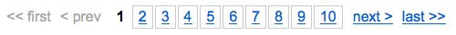

YUI 2: Paginator
YUI 2: Paginator
The Paginator Control allows you to reduce the page size and render time of your site or web application by breaking up large data sets into discrete pages. Paginator addresses the navigation aspect of chunked content, offering a set of controls that it can render into your UI to allow users to navigate through logical sections of local or remote data.
The Paginator Control was introduced with DataTable in version 2.5.0, but it has been broken out for general use as of version 2.6.0.
On This Page:
Quick Links:
- Examples: Explore examples of the Paginator Control in action.
- API Documentation: View the full API documentation for the Paginator Control.
- Release Notes: Detailed change log for the Paginator Control.
- License: The YUI Library is issued under a BSD license.
- Download: Download the Paginator Control as part of the full YUI Library at YUILibrary.com.
Getting Started
To use Paginator, include the following source files in the web page:
<!-- Core + Skin CSS --> <link rel="stylesheet" type="text/css" href="http://yui.yahooapis.com/2.9.0/build/paginator/assets/skins/sam/paginator.css"> <!-- Dependencies --> <script src="http://yui.yahooapis.com/2.9.0/build/yahoo-dom-event/yahoo-dom-event.js"></script> <script src="http://yui.yahooapis.com/2.9.0/build/element/element-min.js"></script> <!-- Source File --> <script src="http://yui.yahooapis.com/2.9.0/build/paginator/paginator-min.js"></script>
yui-skin-sam class name to an element that is a parent of the element
in which the Paginator Control lives. You can usually accomplish this simply by putting the class on the
<body> tag:
<body class="yui-skin-sam">
For more information on skinning YUI components and making use of default skins, see our Understanding YUI Skins article here on the website.

YUI Dependency Configurator:
Instead of copying and pasting the filepaths above, try letting the YUI dependency Configurator determine the optimal file list for your desired components; the Configurator uses YUI Loader to write out the full HTML for including the precise files you need for your implementation.
Note: If you wish to include this component via the YUI Loader, its module name is paginator. (Click here for the full list of module names for YUI Loader.)
Where these files come from: The files included using the text above will be served from Yahoo! servers. JavaScript files are minified, meaning that comments and white space have been removed to make them more efficient to download. To use the full, commented versions or the -debug versions of YUI JavaScript files, please download the library distribution and host the files on your own server.
Order matters: As is the case generally with JavaScript and CSS, order matters; these files should be included in the order specified above. If you include files in the wrong order, errors may result.
Basic HTML Setup
Paginator does not have to render any controls, but it is likely that you will want to. All you need in your markup are container nodes into which the Paginator can render its controls. One Paginator instance can render controls into any number of containers.
<div id="pag1"><!-- pagination controls will go here --></div> <!-- depending on the pagination UI components you choose, you could also use --> <span id="pag2"><!-- and pagination controls will go here --></span> <p id="pag3"><!-- and pagination controls will go here --></p>
Currently, it is not strictly required that the container elements be included in the live DOM, but that may change to support future or custom UI components.
Initializing Paginator
The Paginator class is located at YAHOO.widget.Paginator. The constructor takes a single argument, an object literal containing configuration values.
var pag = new YAHOO.widget.Paginator({ rowsPerPage : 10, totalRecords : 100, containers : [ idStr1, idStr2 ] // or idStr or elem or [ elem, elem ] }); pag.render();
Configuration can be omitted at construction, but these attributes must be set before the Paginator is render()ed.
var pag = new YAHOO.widget.Paginator(); //... pag.set('rowsPerPage', 10); pag.set('totalRecords', 100); pag.set('containers', containerEl); // OR pag.setState({ rowsPerPage : 10, totalRecords : 100, containers : containerEl }); pag.render();
By default, Paginator will render controls into each specified container like this:
Using the Paginator
This section describes how to customize the Paginator and includes:
- Attaching Paginator to Your Data
- Pagination State
- Public API methods
- Paginator Configuration
- Paginator Events
- Templates and UI Components
- Paginator and DataTable
Attaching Paginator to Your Data
Paginator does not directly modify your content. The key to wiring up Paginator to work with your page, application, or widget is to subscribe to its changeRequest event.
var pag = new YAHOO.widget.Paginator({ rowsPerPage : 10, totalRecords: 100, containers : 'paging' }); var MyApp = { /* application API */ //... handlePagination : function (newState) { // Collect page data using the requested page number var pageContent = MyApp.getContent(newState.page); // Update the content area MyApp.replaceContent(pageContent); // Update the Paginator's state pag.setState(newState); } }; pag.subscribe('changeRequest',MyApp.handlePagination);
When users interact with any of the Paginator's controls (or calls are made to the Paginator's public API methods) the Paginator does not immediately update its state and UI. Instead, it broadcasts its changeRequest event to all subscribers, passing an object describing the requested pagination state.
As a subscriber, your app is then responsible for collecting and displaying the data or content appropriate for that state, then updating the Paginator's state accordingly. The Paginator's UI updates automatically when it's state is changed.

Pagination State
The object provided to changeRequest subscribers is the output from the Paginator's getState method. Called without input, getState returns an object literal in the following form:
{ paginator : (the Paginator instance), page : (int), // the current page records : [ (int), (int} ], // index offsets of first and last records on the current page recordOffset : (int), // index offset of the first record on the current page totalRecords : (int), // current totalRecords value rowsPerPage : (int) // current rowsPerPage value }
If passed an object literal with proposed values for any of these properties (except paginator and records), the returned state will contain the full calculated state given the provided modifications and an additional property, before. The value assigned to before will be the current state.
// Get the current pagination state var cur = pag.getState(); // Get the proposed state if rowsPerPage were updated and we moved to page 6 var proposed = pag.getState({ rowsPerPage : 15, page : 6 }); // The proposed state contains the current state, stored under 'before' // Assert.areEqual(cur.page, proposed.before.page);
Paginator does not store transitional states. When users interact with the UI, the changeRequest event is fired with the proposed state object and immediately forgotten. Until the subscriber directly updates the Paginator's state, the Paginator will remain in its current state.
Public API methods
Some of the more useful methods in Paginator's API are:
- render()
- Creates the content for the configured template in the specified containers.
- getCurrentPage()
- Returns the current page number.
- getPageRecords(n)
- Returns an array with two values: the index/offset associated with the first and last record on the current page or page supplied as an input parameter.
- getTotalPages()
- Returns the number of pages available for paging given the current totalRecords and rowsPerPage configuration.
- getState(o)
- Returns an object representing the current or proposed state, depending on the input. See Pagination State.
- hasPage(n)
- Returns true if the input page is available to navigate to.
- setPage(n)
- Fires a
changeRequestwith the proposed page. - setRowsPerPage(n)
- Fires a
changeRequestwith the proposedrowsPerPage. - setTotalRecords(n)
- Fires a
changeRequestwith the proposedtotalRecords. - setState(o)
- Applies state information to the Paginator's attributes in batch, triggering a UI update if necessary.
Note: the Paginator's state is maintained in its attributes recordOffset, totalRecords, and rowsPerPage. Calling set directly on these attributes will cause the UI to update if necessary. It will not trigger a changeRequest.
// Broadcast a changeRequest to subscribers. totalRecords remains unchanged pag.setTotalRecords(100); // totalRecords changed. UI updated. changeRequest will not be fired pag.set('totalRecords',100);
Paginator Configuration
A full list of configuration options is included in the API docs. The most common configurations passed at construction are:
- rowsPerPage
- Number of records associated with a single "page". (required).
- totalRecords
- The number of records to paginate through. Set to
YAHOO.widget.Paginator.VALUE_UNLIMITEDif there is no logical limit to the set. (required). - containers
- Where to render the pagination UI. (required).
- template
- An HTML string including UI Component placeholders that will be used to populate the configured container elements. See Templates and UI Components.
- alwaysVisible
- Set to
false, the configured containers will be hidden unless there is enough data for at least two pages.trueby default.
Additionally, UI Components add their configuration options onto the host Paginator, so their configuration can be done during construction as well.
var pag = new YAHOO.widget.Paginator({ rowsPerPage : 10, totalRecords : 50, containers : [ "pag-above", "pag-below" ], template : "{PageLinks} {RowsPerPageDropdown}", pageLinks : 5, // configure the PageLinks UI Component rowsPerPageOptions : [ 10, 25, 50, 100 ] // configure the RowsPerPageDropdown UI Component
Paginator Events
In addition to the de facto change events emitted when its attributes are modified (e.g. totalRecordsChange), Paginator broadcasts the following interesting moments:
- changeRequest
- Fired when a user interacts with the Paginator UI, or calls are made to certain API methods. See Attaching Paginator to Your Data.
- pageChange
- Fired when an attribute change results in the current page changing.
Templates and UI Components
This section describes how the Paginator's UI is constructed and configured.
- About UI Components
- The Paginator's
templateconfiguration attribute - Common UI Component Configurations
- Rendering UI Components Manually
- Creating new UI Components
About UI Components
Paginator is built on a core model and a UI Component framework. The core (Paginator) is responsible for state calculations, and the UI Components are responsible for appropriately representing that state in the DOM. Each UI Component is its own class, built to handle a specific function. Included with the current Paginator release are the following UI Components:
- FirstPageLink - << first
- LastPageLink - last >>
- PreviousPageLink - < prev
- NextPageLink - next >
- PageLinks - 1 2 3 4 5
- CurrentPageReport - (1 of 21)
- RowsPerPageDropdown - [select element of rows-per-page options]
- JumpToPageDropdown - [select element of page numbers] (as of 2.9.0)
The Paginator's template configuration attribute
The link between the Paginator core and the UI components is the Paginator's template configuration attribute.
The template attribute contains a string of markup mixed with placeholders identifying where in the markup each UI component should reside.
var pag = new YAHOO.widget.Paginator({ rowsPerPage : 50, totalRecords : myData.length, containers : containerEl, template : "{PreviousPageLink} <strong>{CurrentPageReport}</strong> {NextPageLink}" }); pag.render();
this would render something like this:
If multiple containers are specified, the same markup will be generated into each container, so avoid including any elements with an id attribute in your template.
Common UI Component Configurations
Each UI Component comes with its own set of configuration attributes for added flexibility. These attributes are added to the host Paginator, allowing configuration during the Paginator's construction. For a full list of available configuration attributes, check the respective class definitions in the API docs or the configuration example.
Some more common UI Component configurations are:
- pageLinks
- rowsPerPageOptions
- pageReportTemplate
- firstPageLinkLabel
- lastPageLinkLabel
- previousPageLinkLabel
- nextPageLinkLabel
Rendering UI Components Manually
The template mechanism is convenient for common cases, but it is possible to manually place individual UI Components on the page. Each UI Component has a render(id) method that returns the generated DOM structure for that component. Coupling this with the DOM methods insertBefore or appendChild, you can have complete control of where and how many UI Components are added to your page.
var pag = new YAHOO.widget.Paginator({ rowsPerPage : 10, totalRecords : myData.length }); var currentPageDisplay = new YAHOO.widget.Paginator.ui.CurrentPageReport(pag); YAHOO.util.Dom.get('pageDisplay').appendChild( currentPageDisplay.render('pageDisplay') );
Another approach to piecemeal rendering is to use the paginator.renderUIComponent( placeholderElement, idSeed ) method to progressively enhance existing markup. The placeholder element is inspected for a class name in the form of yui-pg-ui-COMPONENT where COMPONENT is the name of the UI component class you want rendered there. For example, the following code enhances a "last page" link from existing markup:
// Replaces <a href="..." id="last_pg" class="yui-pg-ui-LastPageLink">...</a> // in the markup with the rendered markup from an instance of // YAHOO.widget.Paginator.ui.LastPageLink var paginator = new YAHOO.widget.Paginator({ ... }), placeholder = YAHOO.util.Dom.get('last_pg'); // The second param is a string to help ensure id uniqueness. It's up to you. pag.renderUIComponent(placeholder, 'xyz');
Notice the class to be instantiated is inferred from the placeholder's class name. Also notice the containers configuration is not used in either case, nor is the Paginator render()ed. When placing UI Components manually, neither is necessary.
Creating new UI Components
The Paginator core and UI Component architecture makes it easy to create new pagination controls. When render()ing its template, Pagintor looks for UI Component classes in the YAHOO.widget.Paginator.ui namespace matching any bracketed placeholders.
// renders an instance of YAHOO.widget.Paginator.ui.FirstPageLink var pag1 = new YAHOO.widget.Paginator({ rowsPerPage : 10, totalRecords : myData.length, containers : 'foo', template : "jump to {FirstPageLink}" }); // Looks for a class YAHOO.widget.Paginator.ui.MyCustomControl to // instantiate and render var pag2 = new YAHOO.widget.Paginator({ rowsPerPage : 10, totalRecords : myData.length, containers : 'bar', template : "jump to {MyCustomControl}" });
New Paginator UI Components should follow some basic guidelines:
- The class must live in the
YAHOO.widget.Paginator.uinamespace. - Include static method
init(paginator)to add any configurations to the Paginator instance. - Include an instance method
render(id_base)to create and return the control's DOM structure. - Do only one thing.
- Respect the separation of duties. The component's job is to read the Paginator's state and display it. It can request state modifications, but it should not directly modify the Paginator state.
- Be mindful that each component's
rendermethod will be called once for every configured container, so don't create duplicate ids (theid_baseis to help avoid this).
Here is a starting template for new Paginator UI Components.
Don't forget to share your own new components on the YUI developer forums or even contribute them directly to the library with a pull request from your fork of the yui2 project.
Paginator and DataTable
Paginator started its life in the DataTable widget in version 2.5.0. Beyond feature enhancements and bug fixes, Paginator has remained the same. It can be used with DataTable in the same fashion now as then.
var tblConfig = { paginator : new YAHOO.widget.Paginator({ rowsPerPage : 25 }), initialRequest : '', selectionMode : 'single' }; var myDataTable = new YAHOO.widget.DataTable(tblId, colDef, myDataSource, tblConfig);
YUI on Mobile: Using Paginator Control with "A-Grade" Mobile Browsers
About this Section: YUI generally works well with mobile browsers that are based on A-Grade browser foundations. For example, Nokia's N-series phones, including the N95, use a browser based on Webkit — the same foundation shared by Apple's Safari browser, which is found on the iPhone. The fundamental challenges in developing for this emerging class of full, A-Grade-derived browsers on handheld devices are:
- Screen size: You have a much smaller canvas;
- Input devices: Mobile devices generally do not have mouse input, and therefore are missing some or all mouse events (like mouseover);
- Processor power: Mobile devices have slower processors that can more easily be saturated by JavaScript and DOM interactions — and processor usage affects things like battery life in ways that don't have analogues in desktop browsers;
- Latency: Most mobile devices have a much higher latency on the network than do terrestrially networked PCs; this can make pages with many script, css or other types of external files load much more slowly.
There are other considerations, many of them device/browser specific (for example, current versions of the iPhone's Safari browser do not support Flash). The goal of these sections on YUI User's Guides is to provide you some preliminary insights about how specific components perform on this emerging class of mobile devices. Although we have not done exhaustive testing, and although these browsers are revving quickly and present a moving target, our goal is to provide some early, provisional advice to help you get started as you contemplate how your YUI-based application will render in the mobile world.
More Information:
- Challenges of Interface Design for Mobile Devices - YUI Blog article by Lucas Pettinati, Yahoo! Sr. Interaction Designer.
- Performance Research, Part 5: iPhone Cacheability - Making it Stick - YUI Blog article by Tenni Theurer and Wayne Shea from the Yahoo! Exceptional Performance Team
There are no known issues with the rendering or operation of the Paginator on mobile devices.
Support & Community
The YUI Library and related topics are discussed on the on the YUILibrary.com forums.
Also be sure to check out YUIBlog for updates and articles about the YUI Library written by the library's developers.
Filing Bugs & Feature Requests
The YUI Library's public bug tracking and feature request repositories are located on the YUILibrary.com site. Before filing new feature requests or bug reports, please review our reporting guidelines.
Paginator Examples:
- Getting started with Paginator
- Rendering controls into multiple containers
- Manually rendering Paginator UI Components
- Configuring the Paginator
Other YUI Examples That Make Use of the Paginator:
- Client-side Pagination (included with examples for the DataTable Control)
- Server-side Pagination and Sorting for Dynamic Data (included with examples for the DataTable Control)
- Complex Example of Multiple Features (included with examples for the DataTable Control)
YUI Paginator on del.icio.us:
be the first to bookmark this page!
All YUI 2.x users should review the YUI 2.8.2 security bulletin, which discusses a vulnerability present in YUI 2.4.0-2.8.1.
- YUI Library
- YUI Home
- YUI 3
- YUIBlog
- Bug Reports/Feature Requests
- YUI on GitHub
- YUI License
- YUI 2.x Resources
- YUI 2 Archives
- YUI 2 Examples
- YUI 2 API Docs
- YUI 2 Discussion Forums

- YUI Components
- Animation
- AutoComplete
- Browser History Manager
- Button
- Calendar
- Carousel
- Charts
- Color Picker
- Connection Manager
- Container
- Cookie
- DataSource
- DataTable
- Dom
- Drag & Drop
- Element
- Event
- Get
- ImageCropper
- ImageLoader
- JSON
- Layout Manager
- Logger
- Menu
- Paginator
- Profiler
- ProfilerViewer
- ProgressBar
- Resize
- Rich Text Editor
- Selector
- Slider
- Storage
- StyleSheet
- SWF
- SWFStore
- TabView
- TreeView
- Uploader
- Yahoo Global Object
- YUI Loader
- YUI Test
- Reset CSS
- Base CSS
- Fonts CSS
- Grids CSS
Copyright © 2013 Yahoo! Inc. All rights reserved.